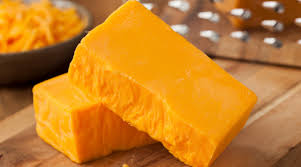

Interests

Cheddar Cheese
World War 2 Warships
submarines. Destroyers saw dramatic improvements, as the Fubuki-class destroyer set a new standard not only for Japanese vessels, but
for navies around the world, and are considered to be the world's first modern destroyer. Submarines were critical in the Pacific
and Atlantic theatres. Advances in submarine technology included the snorkel, though advanced German submarine types came into service
too late to impact the war effort. The German Kriegsmarine also introduced the pocket battleship, to get around constraints imposed by
the Treaty of Versailes.
Cheese
the milk protein casein. It comprises proteins and fat from milk, usually the milk of cows, buffalo, goats, or sheep. During
production, the milk is usually acidified, and adding the enzyme rennet causes coagulation. The solids are separated and pressed
into final form. Some cheeses have molds on the rind, the outer layer, or throughout. Most cheeses melt at cooking temperature.
Hundreds of types of cheese from various countries are produced. Their styles, textures and flavors depend on the origin of the
milk (including the animal's diet), whether they have been pasteurized, the butterfat content, the bacteria and mold, the processing,
and aging. Herbs, spices, or wood smoke may be used as flavoring agents. The yellow to red color of many cheeses, such as Red Leicester,
is produced by adding annatto. Other ingredients may be added to some cheeses, such as black pepper, garlic, chives or cranberries.
For a few cheeses, the milk is curdled by adding acids such as vinegar or lemon juice. Most cheeses are acidified to a lesser degree
by bacteria, which turn milk sugars into lactic acid, then the addition of rennet completes the curdling. Vegetarian alternatives to
rennet are available; most are produced by fermentation of the fungus Mucor miehei, but others have been extracted from various species
of the Cynara thistle family. Cheesemakers near a dairy region may benefit from fresher, lower-priced milk, and lower shipping costs.